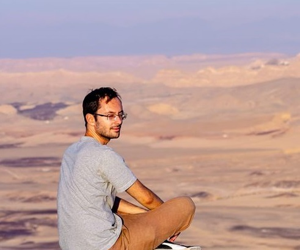

Greetings! My name is Denis Khoronenko, I am a 27-year-old journalist and Web Developer based in Tel Aviv, Israel. I have a lot of newsroom experience as a writer and editor, focusing primarily on international news, especially US politics or Middle East security. I am also an avid fan of all things high-tech, seeking to bring data analysis and interactivity to the stories I tell, as well as doing some coding as a hobby.
In this and the next section, hover the cursor over what you'd like to learn more about!
News Editor: 2014 - 2016.
Managing News Editor: 2016 - 2017.
Digital Content Editor: 2019 - now.
Diploma Specialista: Linguist, Translator (English, Danish) -- Honors, 2014.
Master of Arts: International Relations -- 2:1, 2019.
Please feel free to reach out to me on my...
...or use this form to drop me a line -- please make sure to fill all the fields marked with an asterisk.